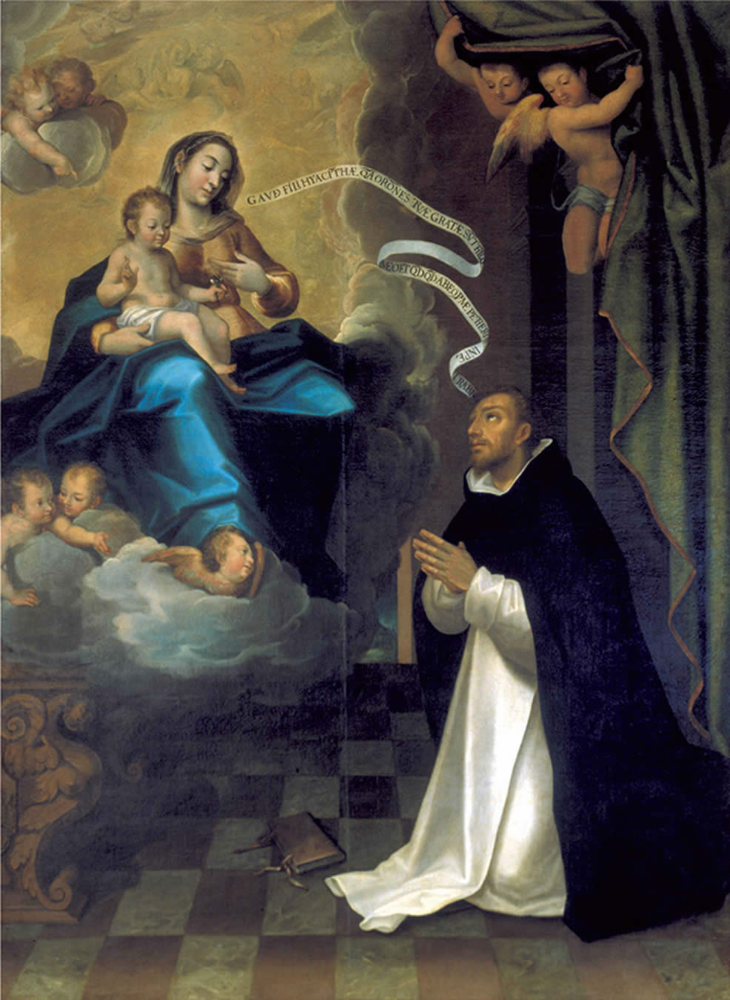
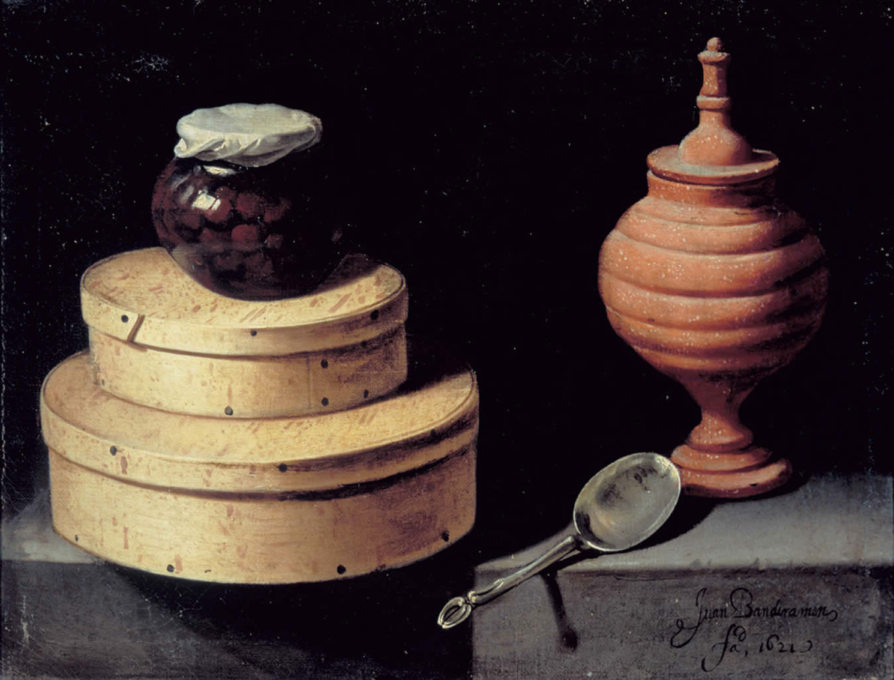
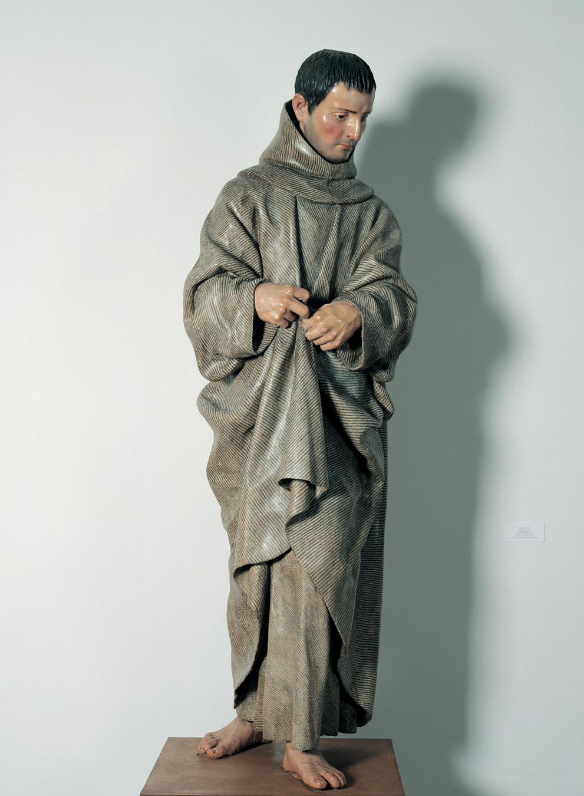
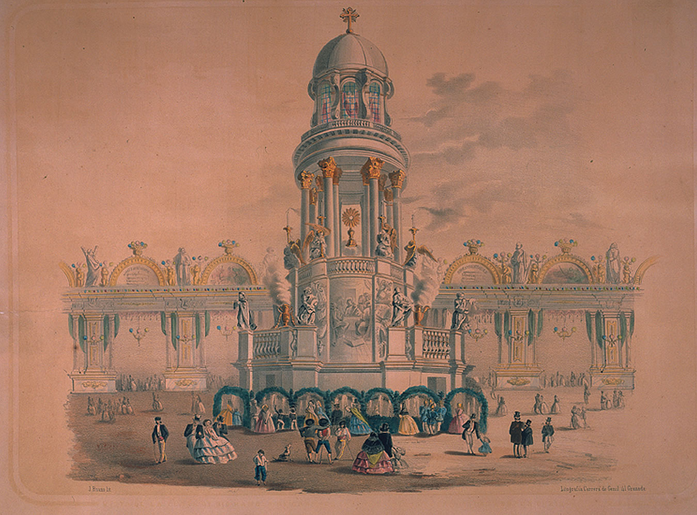
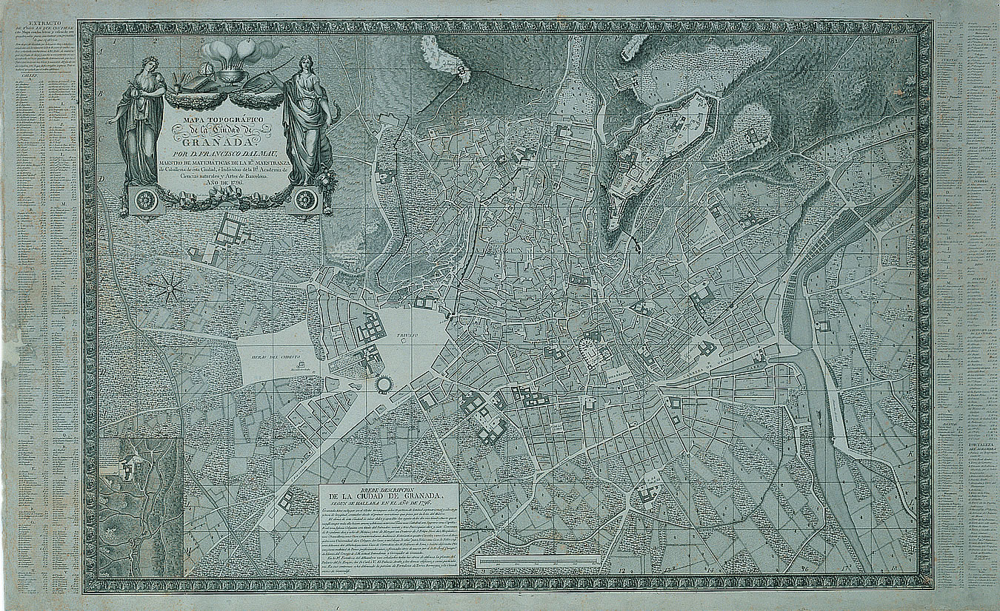

Aparición de la Virgen a San Jacinto, Pedro de Raxis (1600)  Bodegón con cardo y zanahorias, Fray Juan Sánchez Cotán (1603-1627)  San Juan de Capistrano y San Bernardino de Siena, Alonso Cano (1652-1657)
San Diego de Alcalá, Alonso Cano (1653-1657)  Decoraciones para las fiestas del Corpus, J. Ruano (1850)  Mapa topográfico de la ciudad de Granada, Francisco Dalmau (1796) 